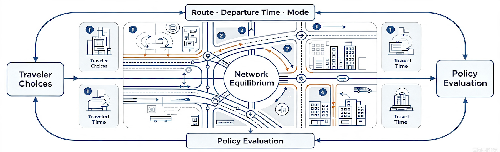
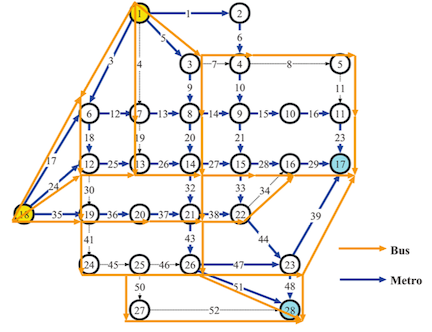
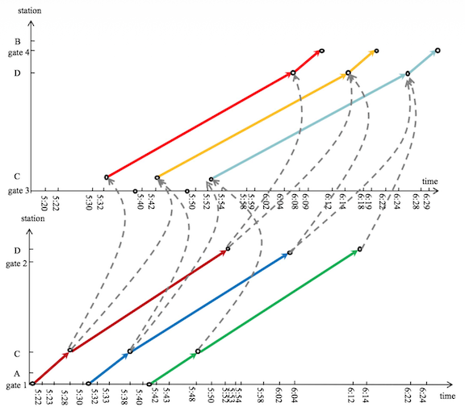
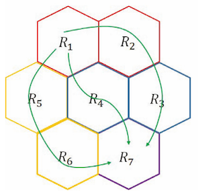
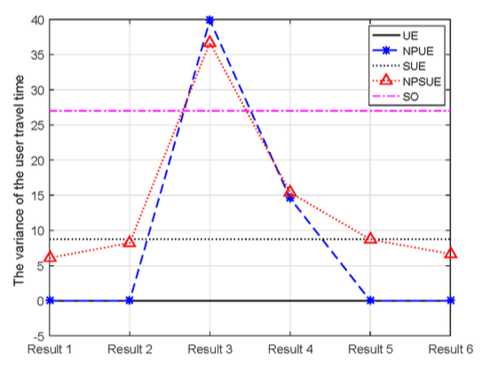
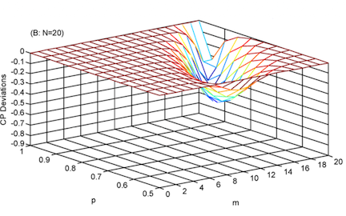

Network Equilibrium: Models, Behavior, and Applications
Overview
Network equilibrium describes a state in which travelers’ choices and network conditions are mutually consistent. Travelers choose routes, departure times, or modes based on the costs they perceive, while their collective choices determine congestion, travel times, and service conditions. Network equilibrium provides a fundamental framework for predicting traffic patterns, understanding traveler behavior, and evaluating transportation policies and system designs.

Our studies extend network equilibrium models to capture traffic dynamics, uncertainty, heterogeneous behavior, multimodal choice, and transit operations:
- Conventional multimodal equilibrium models often overlook captive travelers and the correlations among modes and overlapping routes, potentially biasing network predictions and policy evaluation. We developed a multimodal network equilibrium model that combines hybrid dogit–nested logit mode choice with path-size logit route choice, formulated it as an equivalent mathematical program with a unique solution, and developed a partial-linearization algorithm[1].
- Existing simulation and dynamic assignment methods have difficulty accurately estimating the spatial and temporal distribution of passengers while respecting actual train schedules and transfer feasibility. We constructed a train operation diagram–based equilibrium model that incorporates travel and transfer times, in-train and station congestion, and explicit transfer constraints, and demonstrated it on the Beijing urban rail network[2].
- Aggregate MFD models reduce the complexity of city-scale traffic analysis, but conventional formulations struggle to represent fast-changing demand, state-dependent travel times, and simultaneous route and departure-time choices. We formulated a dynamic user equilibrium model for multi-region MFD systems with endogenous time-varying delays and state and inflow constraints, deriving equilibrium conditions without linearizing the delays or assuming constant travel times[3].
- Classical user equilibrium assumes complete path information, while conventional stochastic models do not explicitly represent heterogeneity in travelers’ limited choice sets. We developed an N-path logit-based stochastic user equilibrium model that captures perceptual errors and heterogeneous path-set sizes, and showed how appropriately limited guidance information can benefit both travelers and network performance[4].
- Conventional stochastic user equilibrium does not directly describe selfish routing when travelers know the objective probability distributions of uncertain route travel times. We proposed a probability-dominant user equilibrium that assigns demand only to the most dominant routes, together with a behavioral rerouting dynamic and a tractable logit-based formulation[5].
Publications

[1]A Multi-Modal Network Equilibrium Model Considering Captive Travelers and Mode Correlation

[2]Train Operation Diagram–Based Equilibrium Model for an Urban Rail Transit Network with Transfer Constraints

[3]A Dynamic User Equilibrium Model for Multi-Region Macroscopic Fundamental Diagram Systems with Time-Varying Delays

[4]An N-Path Logit-Based Stochastic User Equilibrium Model

[5]Selfish Routing Equilibrium in Stochastic Traffic Network: A Probability-Dominant Description